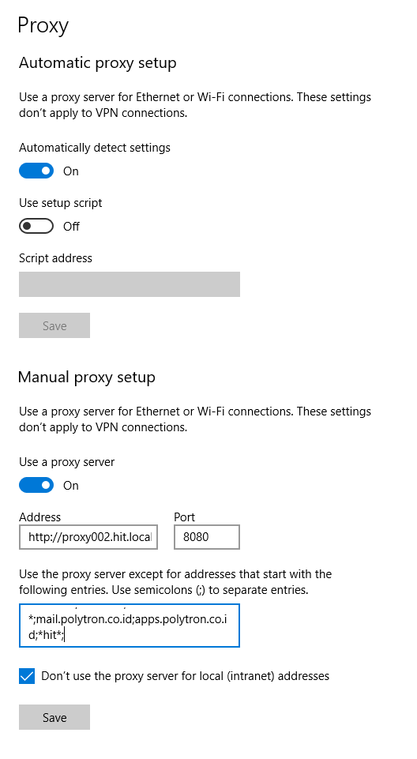

Installation
Dokumen ini menjelaskan tentang instalasi software yang dibutuhkan dan persiapan lingkungan pengembangan di PC lokal developer.
Software yang dibutuhkan instalasi ini dapat diperoleh di lokal server share section folder ESD-Application:
M:\Share\master\php-laravel
Software Requirements for Artemis Developer PC
- Git
- RSync
- Composer
- XAMPP - Apache2 web server, MariaDB database server, PHP, phpMyAdmin (optional, untuk debuging di PC lokal)
- Visual Studio Code
- Modelio
- Pencil
- MkDocs (optional, untuk pengembangan dokumentasi)
Langkah Instalasi akan terdiri dari,
- instalasi XAMPP (Apache2 web server, MariaDB database server, PHP, phpMyAdmin)
- instalasi git for windows
- instalasi rsync di dalam gitbash
- instalasi composer
- instalasi Microsoft Visual Studio Code
- instalasi Modelio
- instalasi Pencil
- instalasi MkDocs
XAMPP Installation
Download XAMPP dari https://www.apachefriends.org/download.html.
Jalankan dan ikuti proses instalasi di Windows 10. Setting agar php.exe dapat mudah ditemukan yaitu dengan menambahkannya di PATH environment variable.
Cara setting PATH PHP:
- Buka Windows Start menu search (shortcut:
Windows+s), ketik env, akan munculEdit Environment Variable for Your Account - pilih PATH, pilih tombol Edit
- pilih NEW
- pilih Browse, pilih lokasi php.exe di folder instalasi XAMPP. contoh:
d:\xampp\php. - pilih simpan/OK
Git Installation
Download git for Windows di https://git-scm.com/downloads.
Jalankan dan ikuti proses instalasi di Windows. untuk melihat php sudah dapat dijalankan di gitbash, buka gitbash dan ketik,
which php
php --version
versi php setidaknya PHP >= 7.1.3 untuk Laravel 5.8
RSync Installation
Jangan gunakan cwRsync karena gitbash tidak menggunakan cygwin seperti yang digunakan di cwRsync. gitbash menggunakan msys seperti yang digunakan pacman. Download rsync dari repository pacman.
Ekstrak dan salin rsync.exe ke folder /usr/bin/ di dalam gitbash.
Composer Installation
composer setup untuk Windows dapat didownload di https://getcomposer.org/Composer-Setup.exe.
Aplikasi ini akan mengunduh composer versi terbaru dan mengatur PATH sehingga dapat dijalankan hanya dengan mengetik composer di dalam command line atau gitbash.
Visual Studio Code Installation
Sebagai editor source code disarankan menggunakan Ms.VS Code yang sudah terintegrasi dengan git download dari https://code.visualstudio.com/. Gunakan yang user installer, agar tanpa hak akses administrator.
Aplikasi ini opensource dan gratis dari Microsoft, tersedia di Windows dan Linux. Jalankan dan ikuti proses instalasi di Windows.
Modelio Installation
Sebagai editor UML untuk use case diagram dan diagram lain yang dibutuhkan untuk proses non teknis development. Modelio dapat diunduh di https://www.modelio.org. Jalankan dan ikuti proses instalasi di Windows.
Pencil Installation
Sebagai editor UI design untuk proses mockup tampilan aplikasi. Pencil dapat diunduh di https://pencil.evolus.vn. Jalankan dan ikuti proses instalasi di Windows.
MkDocs Installation
MkDocs adalah script python yang digunakan untuk membuat dokumentasi menggunakan sintak Markdown. Dokumentasi Artemis untuk developer menggunakan MkDocs agar mudah dikembangkan lebih lanjut, karena menggunakan Markdown (lebih sederhana, penulisan lebih cepat dan lebih mudah dipelajari daripada sintak Html). Karena MkDocs adalah script python, maka Anda harus menginstall python terlebih dahulu.
Install Python Installation
Periksa apakah python sudah terinstall dalam sistem Anda,
python --version --version
pip --version
Kalo belum terinstall, Anda dapat mengunduh python installer dari python.org sesuai sistem operasi Anda (rekomendasi: gunakan versi 64 bit).
Jika Anda menginstall di Windows, pastikan centang opsi Add python to PATH (default tidak dicentang).
Python memiliki package manager bawaan yang biasanya sudah termasuk dalam instalasi python, yaitu pip. Jika Anda ingin meng-upgrade pip, Anda dapat menjalankan perintah berikut,
pip install --upgrade pip
Jika pip belum terinstall dalam sistem Anda, download script get-pip.py. Kemudian jalankan
python get-pip.py
Install MkDocs
Install dengan pip, (install juga beberapa plugin MkDocs yang dibutuhkan)
pip install mkdocs
pip install mkdocs-material
pip install mkdocs-pdf-export-plugin
NB: Untuk menggunakan pdf-export plugin, Anda perlu install GTK+, jika Anda menggunakan Python 64 bit gunakan installer GTK+ 64 bit.
Jika sudah terinstall, Anda dapat memeriksa versi MkDocs,
mkdocs --version
Cara Menggunakan MkDocs
MkDocs digunakan untuk mengedit dokumentasi, maka ini hanya diperlukan saat kita bekerja git repository dari dokumentasi. Hal ini akan dijelaskan pada modul Artemis Documentation Editing.
Setting Proxy jika composer/ pip / git problem koneksi
Setting Proxy server pada system Windows (PC belum Join domain AD)
Setting System Proxy di Windows > Settings > Network & Internet > Proxy, dalam manual proxy,
- Set use proxy server: ON
- Address: http://proxy002.hit.local
- Port: 8080
- Proxy Exception:
localhost;127.0.0.1;10.*;mail.polytron.co.id;apps.polytron.co.id;*hit*;*hefaistos.app;artemisdev.polytron.co.id;artemis.polytron.co.id - Centang pada Dont use proxy server for local (intranet) address.

Setting tambahan pada environment variable Windows
Dengan shortcut tombol Windows + s masuk ke search windows, ketik "env", dan pilih "Edit Environment Variable for your Account",
- Jika belum ada tambahkan variable baru
NO_PROXYdengan tombolNEW. - isi nilainya dengan:
localhost;127.0.0.1;artemis.polytron.co.id;artemisdev.polytron.co.id
Jika PC belum Join Domain AD tambahkan:
1. Jika belum ada tambahkan variable baru http_proxy dengan tombol NEW.
2. isi nilainya dengan: http://proxy002.hit.local:8080
3. Jika belum ada tambahkan variable baru https_proxy dengan tombol NEW.
4. isi nilainya dengan: http://proxy002.hit.local